El maqam
Uno de los elementos fundamentales para entender la música árabe es el maqam. Entendemos bajo esta denominación dos conceptos distintos:
Cada uno de los modos melódicos existentes en la música árabe, que en una primera aproximación pueden equipararse a las escalas de la música occidental (aunque veremos que son conceptos diferentes y el maqam es una idea más amplia).
El sistema tonal que caracteriza la sonoridad y estructura de la música árabe, compuesto por el conjunto de modos melódicos y su forma de uso. Hablamos así de <
maqam árabe>> para referirnos al marco teórico y práctico sobre el que se construye esta música.
En este capítulo, describiremos la primera de estas acepciones y detallaremos qué es un maqam (en plural, maqamaat), su significado, su creación, y los principales de ellos que se emplean en la música árabe actual.
Yins
El estudio de los maqam ha de comenzarse por sus partes constituyentes: los denominados ashnas (en singular, yins)
El yins es la unidad melódica fundamental en la música árabe. Un yins es un grupo de notas, generalmente cuatro, con una estructura interválica determinada. Existen también algunos ashnas de tres y de cinco notas. Puede entenderse un yins como una pequeña escala, en el sentido que esta tiene en la música occidental.
La combinación de dos ashnas (o en algunos casos más de dos) dará lugar a un maqam, como en breve veremos.
Aunque el número de ashnas posibles es muy elevado, se considera que nueve son los principales. Estos son, a su vez, aquellos a partir de los cuales se construyen los maqamaat más habituales.
Cinco de estos ashnas emplean intervalos múltiplos de un tono o un semitono, y generan, por tanto, maqamaat compatibles con la escala cromática occidental. Son los mostrados a continuación.
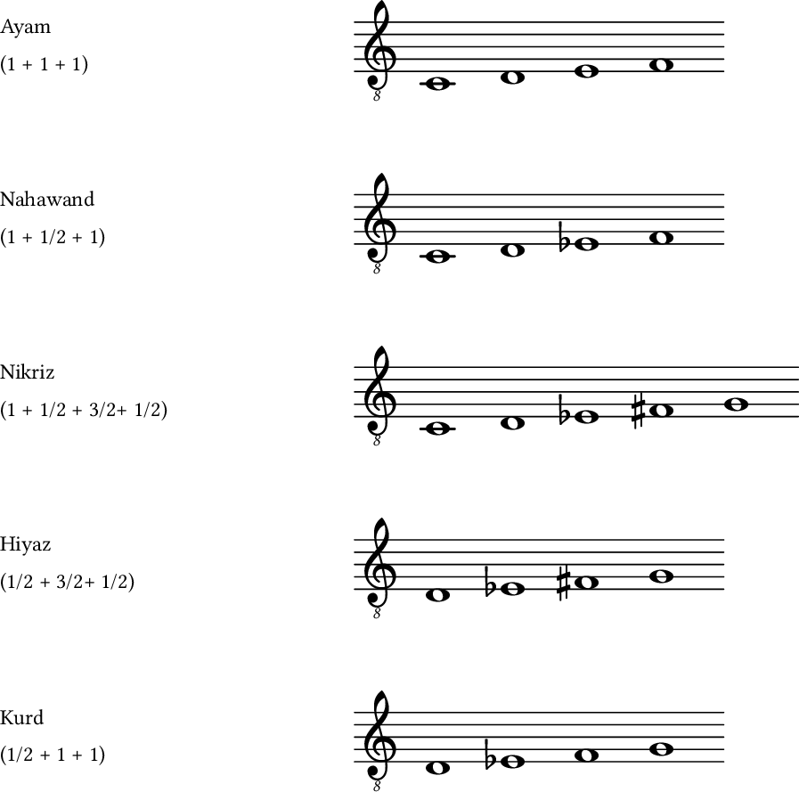
Los restantes, mostrados seguidamente, contienen intervalos de tres cuartos de tono.
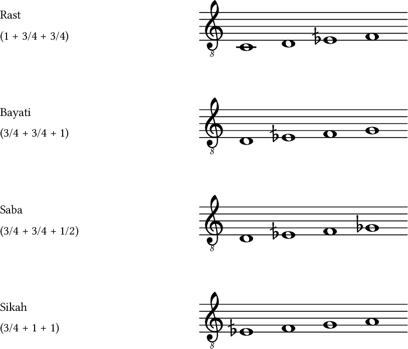
Nótese que, aunque el intervalo mínimo que se considera en el sistema tonal árabe es de un cuarto de tono, este intervalo no aparece en ninguno de los anteriores ashnas. En la práctica, el menor intervalo entre dos notas sigue siendo el medio tono, y el intervalo que se emplea para introducir la microtonalidad y las notas que no forman parte de la escala cromática occidental es el de tres cuartos de tono.
A la hora de presentar los principales ashnasb, puede verse que cada uno de ellos se ha escrito arrancando a partir de una nota particular, que no es la misma para todos ellos. Eso es así debido a que cada yins tiene una nota tónica que resulta más habitual, y aunque es posible trasponerlo a otra nota distinta, en la práctica eso no sucede más que con una serie reducida de ellas.
La razón de este hecho es de carácter histórico, y tiene que ver con la propia configuración de instrumentos tales como el ud. Determinadas tónicas dan lugar a conjuntos de notas más sencillos de tocar o con mejor sonoridad (por ejemplo, con mayor cantidad de notas en cuerdas al aire), y ello condiciona su uso más frecuente frente a otras. No es un fenómeno exclusivo de la música árabe. La guitarra condiciona que las tonalidades de la y mi sean más habituales en el blues (por ser estas las notas de las dos cuerdas más graves), mientras que el violín es responsable de que una gran parte de las piezas tradicionales irlandesas estén en tono de re, entre otros ejemplos.
Para los ashnas anteriores, las siguientes son las tónicas más habituales, incluyendo las ya mostradas previamente.
Ayam: do, sol y si♭.
Nahawand: do, sol, la y fa.
Nikriz: do, re.
Hiyaz: do, re, sol y la.
Kurd: do, re, sol y la.
Rast: do, sol, re y fa.
Bayati: re, sol y la.
Saba: re y sol.
Sikah: mi♭½ y si♭½.
Buena parte de las notas anteriores son aquellas en las que otros ashnas concluyen, o bien se sitúan a distancia de un tono de aquellas. Esto se comprende si sabemos que un maqam está compuesto generalmente por dos ashnas «encadenados», con lo que el uso de esas notas como puntos de inicio se debe a que un yins aparece no como primer grupo de notas de dicho maqam, sino como segundo, y arranca por tanto en la nota en la que termina el anterior.
Maqam
A partir de un conjunto de ashnas (dos en la gran mayoría de casos), se crea la estructura de un maqam. Se tiene de este modo un conjunto de notas con unos determinados intervalos entre ellas, los cuales, por el tamaño de los ashnasb, cubren habitualmente una octava. Entendido así, un maqam puede asemejarse al concepto de escala, pero es sin embargo más complejo que este e implica más elementos.
Podemos emplear el conjunto de notas de un maqam a la manera de una escala para, por ejemplo, improvisar unas frases sobre un ritmo, pero ello no estaría en consonancia con el significado que este tiene dentro de la música árabe. En otras palabras, no estaríamos componiendo música árabe, de la misma forma que no estaríamos tocando un blues solo por el hecho de utilizar una escala pentatónica.
Las notas e intervalos de un maqam son solo un parte de este, pero no su totalidad.
Los otros elementos que componen un maqam son los siguientes:
Notas de mayor relevancia. De las notas que componen el maqam, algunas deben resaltarse frente a las demás como parte de la melodía. Entre ellas, se encuentra en primer lugar la nota tónica, y tras ella la conocida como ghammaz, generalmente situada en el arranque del segundo yins del maqam.
Motivos melódicos. Cada maqam tiene asociado una serie de frases y patrones que le dan su propia personalidad. Estos clichés y motivos melódicos hacen reconocible el maqam más allá de su estructura interválica.
Desarrollo melódico. La manera en que la melodía evoluciona a traves de las notas del maqam está definida y no es arbitraria. Es decir, no basta con combinar de cualquier manera esas notas que lo componen, aun si el resultado es estéticamente agradable.
Modulación. La modulación es una parte fundamental de la música árabe. Una melodía que no modula de un maqam a otro durante su desarrollo se considera excesivamente simple. Las modulaciones que son posibles a partir de un determinado maqam están establecidas por el uso tradicional de estas, y es necesario conocerlas.
De las anteriores, la modulación es la característica más definitoria de un maqam y la que verdaderamente lo diferencia.
Del desarrollo melódico y las modulaciones hablaremos con más detalle en las secciones 1.7 y 1.8.
Aunque se trata, inevitablemente, de algo subjetivo, cada maqam tiene asociado un estado de ánimo, de la misma manera que en la música occidental se acostumbra a decir que las escalas mayores suenan más alegres que las menores, o que el modo locrio tiene una sonoridad extraña o inquietante. A partir de este hecho, se entiende que el tarab que provoca la experiencia musical es distinto en función del maqam en el que esta se enmarque.
Principales maqamaat
Una manera habitual de agrupar los maqamaat es en base a su primer yins. Se tienen así las familias conocidas como fasilah (en singular, fasil).
En esta sección se describe para cada una de estas familias su maqam más representativo, que por norma general lleva el nombre del yins que define el fasil. Este es un buen punto de partida para comenzar el aprendizaje de los maqamaat, a partir de los más extendidos, y de los que a su vez pueden derivarse otros.
En la sección 1.5 ampliaremos el conjunto descrito en esta sección con otros maqamaat que forman parte de estas familias.
Para cada uno de los maqamaat aquí descritos, se proporciona la estructura interválica y las notas y ashnas que lo componen, así como un esquema del diapasón del ud en el que se indica la posición de las notas del maqam en cuestión. La nota tónica se representa en rojo, mientras que las restantes se representan en azul.
Maqam Nahawand
Equivalente en su estructura interválica a la escala menor armónica.
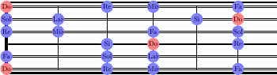
El segundo yins puede sustituirse por yins Kurd, en cuyo caso la estructura interválica del maqam es equivalente al de la escala menor occidental.
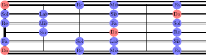
Normalmente, el yins Kurd se emplea en sentido descendente, y el yins Hiyaz en el ascendente.
Maqam Hiyaz
Equivalente en su estructura interválica a un modo frigio dominante. Tiene una cierta sonoridad flamenca, por ser esta escala habitual en el flamenco, aunque el desarrollo melódico del maqam es diferente.
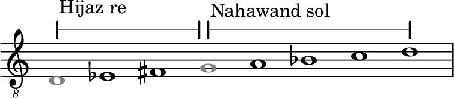
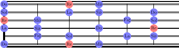
El segundo yins puede sustituirse por yins Rast.
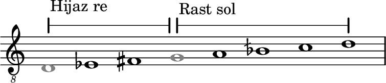
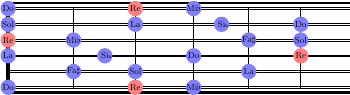
En el ámbito occidental, este maqam ha sido utilizado como un recurso fácil para evocar la sonoridad árabe, convirtiéndose en un cliché. No obstante, no se trata del maqam más popular dentro de la música árabe.
Maqam Rast
El maqam más importante y extendido de la música árabe. Por su preponderancia, puede considerarse como el equivalente a la escala mayor en la música occidental.
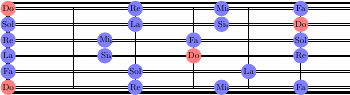
En dirección descendente, el segundo yins suele sustituirse por yins Nahawand. Este maqam es conocido como maqam Suzdalar, aunque es muy raro encontrarlo por sí mismo, y aparece sin embargo así, como una forma de maqam Rast, en la mayoría de piezas construidas sobre este.
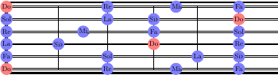
Maqam Bayati
Junto a Rast, Bayati es el maqam más popular en la música árabe, y en los estilos folclóricos es incluso más frecuente que aquel.
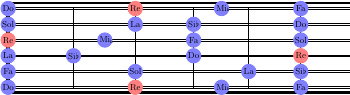
El segundo yins puede sustituirse por yins Rast.
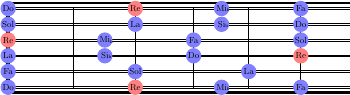
Maqam Ayam
Equivalente en su estructura interválica a la escala mayor occidental.
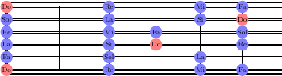
Maqam Nikriz
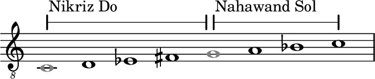
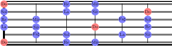
Maqam Kurd
Equivalente en su estructura interválica al modo frigio occidental.
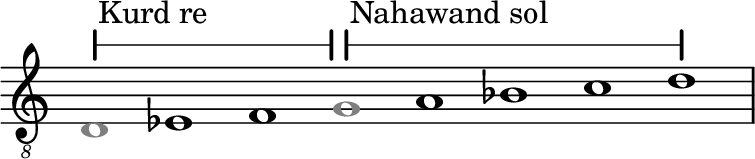
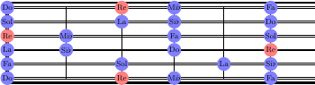
Maqam Saba
Con una sonoridad muy característica, que en la mayoría de oyentes evoca sentimientos de tristeza o sufrimiento. Es el único maqam con yins Saba como primer yins, por lo que, a diferencia de los restantes aquí mostrados, no forma una familia.
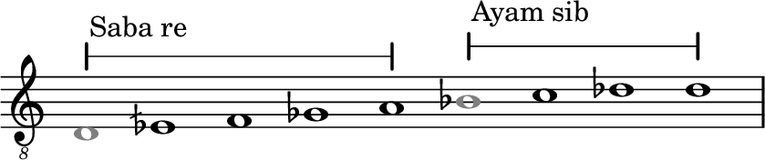
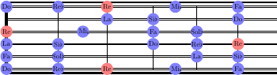
Maqam Huzam
Aunque existe un maqam denominado Sikah, su uso es poco frecuente, y el representante más popular de la familia basada en yins Sikah es maqam Huzam.
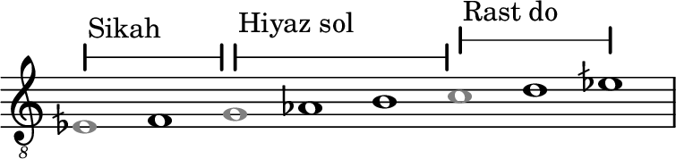
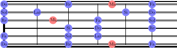
Algunos dulabs de ejemplo
Un buena forma de empezar a familiarizarse con los maqamaat anteriores es a través de dulabs que utilicen cada uno de ellos. Recordemos que un dulab es una pieza instrumental breve, y que con frecuencia se emplea para presentar el maqam alrededor del cual se desarrolla la pieza que después va a tocarse.
Dulab Ayam
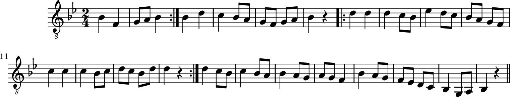
Nótese que en este dulab la tónica se encuentra en si bemol, no en do. Veremos más adelante (sección 1.6) que los maqam no se desplazan a cualquier tónica, como sucede con las escalas occidentales, pero algunos de ellos sí que aparecen sobre varias tónicas. En el caso de maqam Ayam, es frecuente encontrarlo tanto en do como en si bemol.
Dulab Nahawand
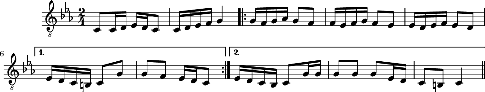
Dulab Kurd
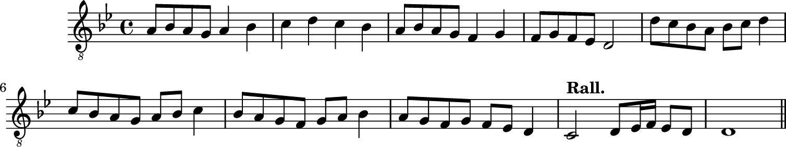
Dulab Hiyaz
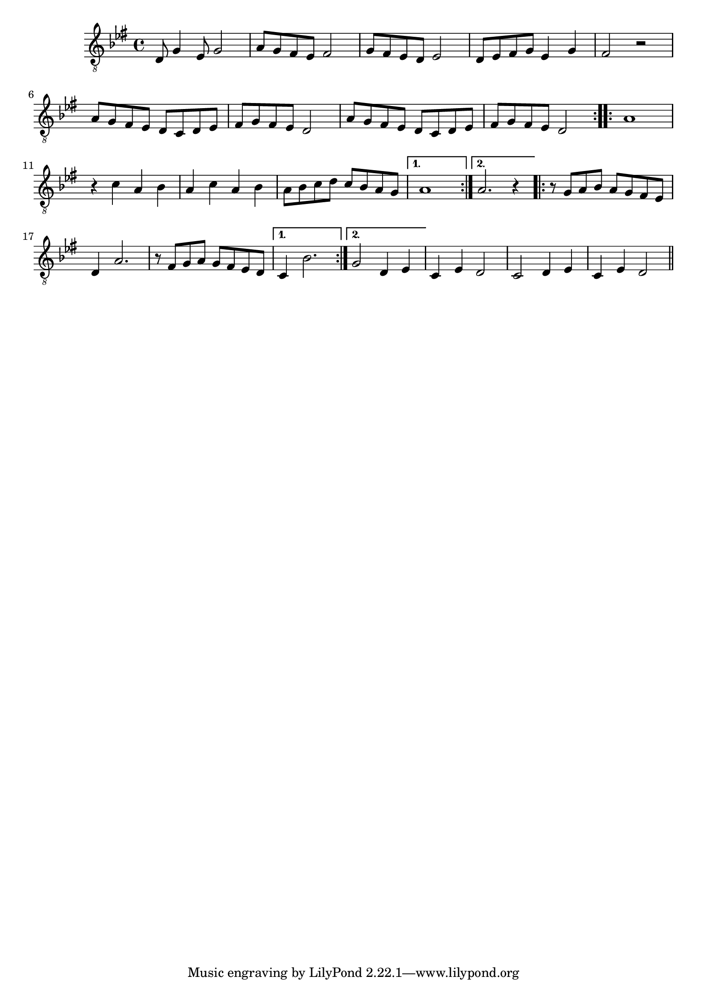
Dulab Nikriz
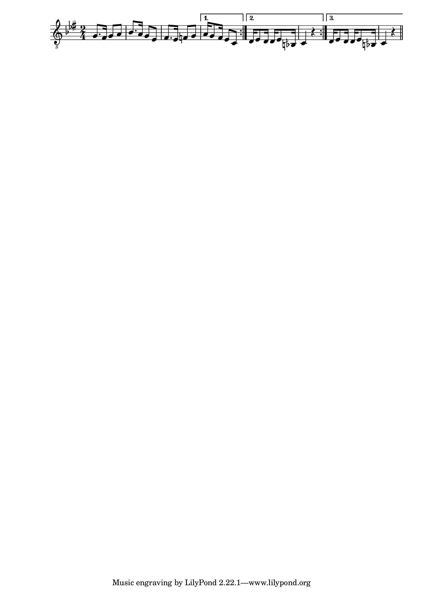
Dulab Rast
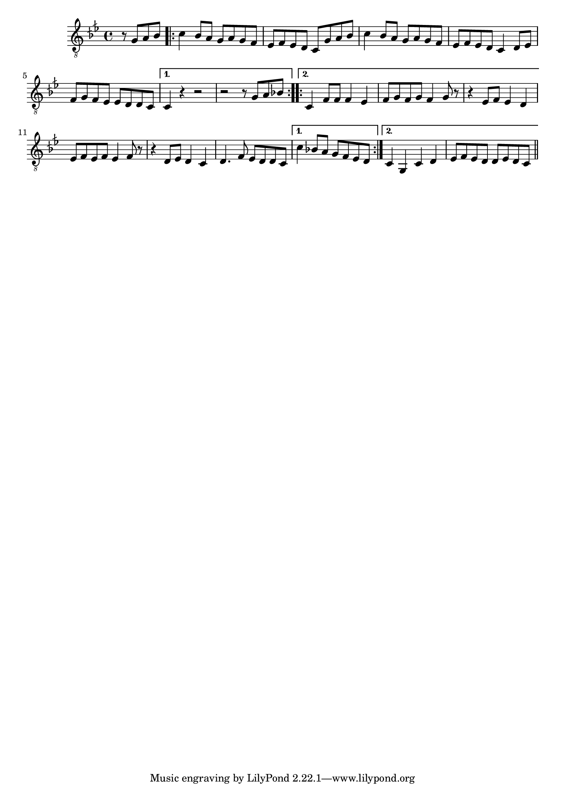
Dulab Bayati
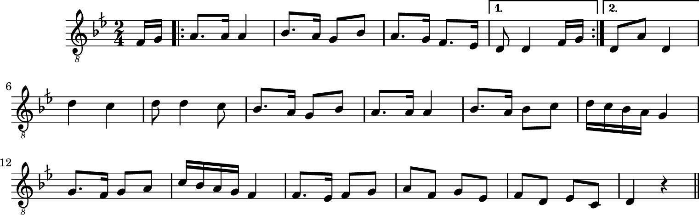
Dulab Saba
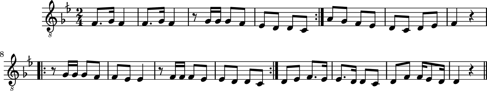
Dulab Huzam
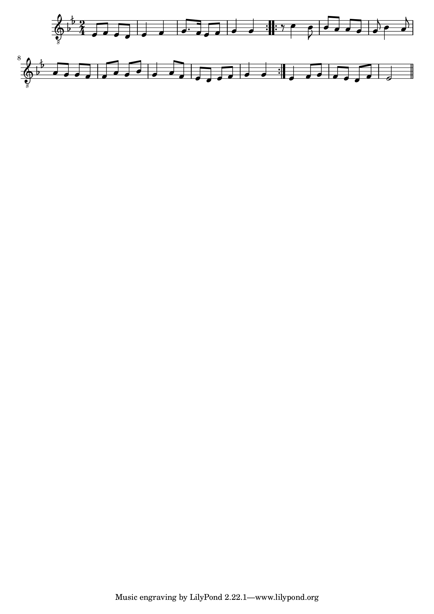
Más maqamaat
Además de los anteriores maqamaat, los siguientes también aparecen con relativa frecuencia en la música árabe. Si bien algunos puede no ser habitual que constituyan el maqam principal de una composición o improvisación, sí que es común que aparezcan como resultado de una modulación, a partir de un maqam más común de su misma familia.
Por esta razón, se presentan agrupados según la familia a la que pertenezcan.
Familia de yins Nahawand
Maqam Ushaq Masri
Aunque maqam Nahawand tiene su tónica en do, maqam Ushaq Masri aparece principalmente con la tónica en re.
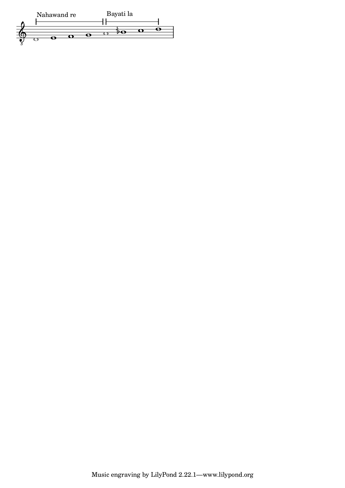
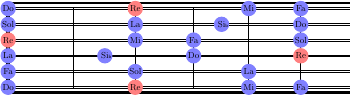
Familia de yins Hiyaz
Maqam Hiyaz Kar
Aunque maqam Hiyaz tiene su tónica en re, maqam Hiyaz Kar aparece principalmente con la tónica en do.
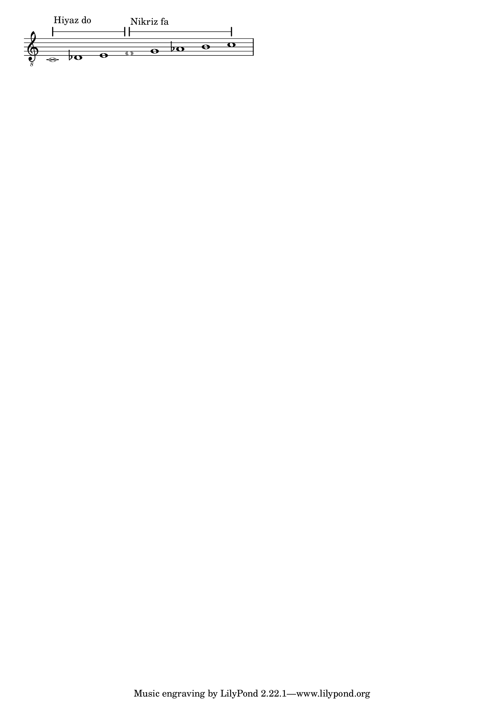
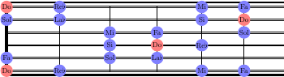
Familia de yins Rast
Maqam Suznak
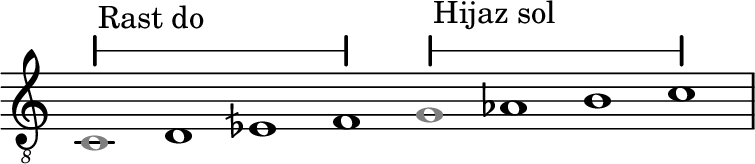
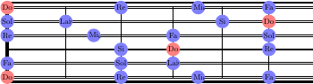
Maqam Mahur
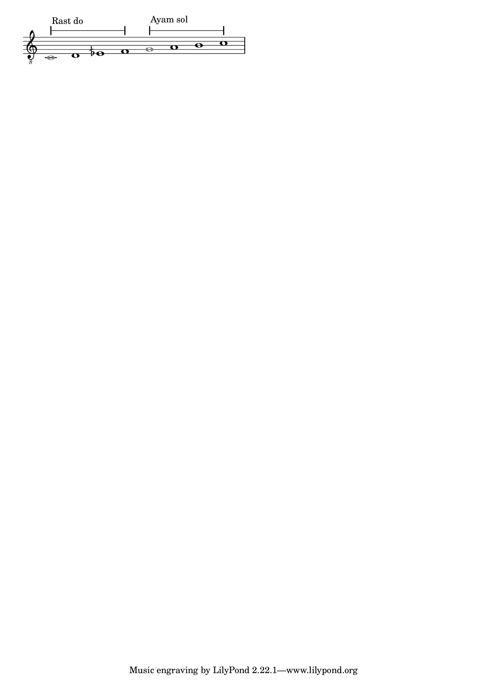
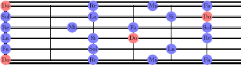
Familia de yins Bayati
Maqam Bayati Shuri
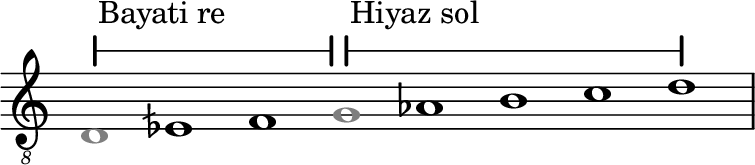
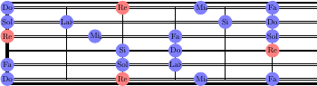
Familia de yins Ayam
Maqam Shawq Afza
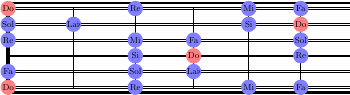
Familia de yins Kurd
Maqam Hiyaz Kar Kurd
Aunque maqam Kurd tiene su tónica en re, maqam Hiyaz Kar Kurd aparece principalmente con la tónica en do.
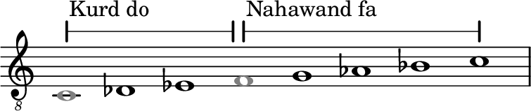
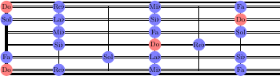
Familia de yins Nikriz
Maqam Nawa Athar
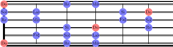
Transposición
Los anteriores maqamaat se han presentado con su tónica respectiva situada en la nota desde la que arranca por norma general el primer yins de cada uno de ellos (salvo excepciones como Hiyaz Kar, que aparece con mayor frecuencia con la tónica en do). De la misma manera que una escala en la música tradicional puede transponerse y comenzar en cualquiera de las 12 notas de la escala cromática, un maqam podría también componerse a partir de cualquiera de ellas (o incluso de cualquiera de las 24 del sistema tonal árabe). Esto, sin embargo, ocurre con poca frecuencia. Los maqamaat no son tan «móviles» como lo son las escalas, y la mayoría no aparecen más que en la forma que aquí se ha presentado. En caso de aparecer sobre otras notas, estas son notas relevantes de algún otro maqam, y se llega a ellos modulando desde este, como veremos en breve.
Aquellos maqamaat que aparecen con cierta frecuencia sobre otras tónicas acostumbran a tener nombres distintos. Por ejemplo, el maqam Nahawand con la tónica en sol se conoce como Farafaza. Sin embargo, a pesar de su estructura interválica idéntica, el resto de elementos del maqam tales como su sayr o sus frases características no son necesariamente las mismas, y en ocasiones se ha de considerar como un maqam distinto.
A efectos prácticos, se pueden considerar los maqamaat como «anclados» en una nota característica de cada cual, y solo en algunas ocasiones se utilizan sobre una tónica distinta, en la mayoría de casos no como maqam principal de la pieza, sino llegando a ellos tras una modulación (véase 1.8).
Como consecuencia de esto, hay un gran número de notas de las 24 del sistema tonal árabe que no se utilizan en la práctica. Con las notas si♭½ y mi♭½ pueden tocarse todos los maqamaat que hemos visto, así como la mayor parte de los que, por ser su uso poco frecuente, no se detallan aquí.
Un maqam no solo no se desplaza libremente de una nota a otra, sino que en cierta forma viene condicionado a una determinada octava. Si recordamos lo explicado en su momento acerca del sistema tonal árabe, hablábamos entonces de cómo una misma nota en distintas octavas tenía un nombre distinto, y de cómo el rango que cubrían esos nombres (y que representa el esperado para el desarrollo de una melodía) no era tan amplio como el del propio ud. Esto indica que un maqam tiene un lugar dentro del rango del ud, y que fuera de él no tiene el mismo sentido (a diferencia de una escala en la música occidental, que tiene igual significado tocado en un registro u otro del instrumento, siendo que los intervalos son lo único que tiene importancia).
Por ejemplo, maqam Rast ha de arrancar de la nota Rast (do central del ud), y no del do situado en la cuerda más grave tocada al aire. La octava inferior, esa que arranca en la cuerda grave, se puede emplear para añadir notas pedal o puede entrarse en ella durante el desarrollo melódico, pero este se ha de producir mayoritariamente sobre la siguiente octava, la central del diapasón, que constituye el emplazamiento en el que, podríamos decir, el maqam está concebido.
Desarrollo melódico
Al igual que otros muchos aspectos de la música árabe, el desarrollo melódico viene condicionado por la preponderancia de la voz como elemento central. Esta, junto con las otras características de la música árabe, dictan la forma y propiedades de las melodías.
El rasgo más característico es el uso de intervalos cortos, normalmente no mayores de una segunda. Los saltos amplios entre notas son muy poco frecuentes, salvo al inicio de una frase o en los intervalos de una octava que se utilizan como ornamentación o patrón melódico (ver [octavas]).
Las frases largas en una única dirección, ya sea ascendente o descendente, no son comunes.
Con lo anterior, es rara la aparición de frases que puedan asemejarse a arpegios, aunque en algunas piezas no improvisadas más recientes sí que puedan incluirse fragmentos, principalmente por influencia occidental.
A la hora de improvisar en el ud, se han de tener en cuenta las características anteriores, de tal manera que las frases respondan a ellas, para así dar a la improvisación la identidad propia de esta clase de música.
La propiedad característica de cada maqam, en lo referente al desarrollo melódico, es la dirección predominante en la que este se produce. Algunos maqamaat tienen una dirección fundamentalmente ascendente, mientras que otros son descendentes. Sin embargo, esta propiedad ha perdido importancia en la música árabe contemporánea, y a día de hoy no se sigue de manera tan estricta como antiguamente.
Modulación
Entendemos por modulación el cambio de un maqam a otro como marco melódico dentro de una pieza. A diferencia de la música occidental, donde existen las modulaciones entre escalas pero no son un elemento necesario, la modulación es parte fundamental y necesaria de la música árabe y del uso de un maqam. Una pieza árabe de una cierta longitud que no incorpore varias modulaciones es tan poco habitual como una composición de música occidental con un único acorde. El dinamismo y la creatividad de la pieza se expresan a través de ese recorrido melódico.
La modulación entre maqamaat viene determinada por lo que se conoce como el sayr de cada maqam. El sayr dicta la manera en la que, arrancando desde un determinado maqam, la melodía utiliza este, visita otros maqamaat distintos, y regresa generalmente al original para concluir en él la pieza.
El sayr de un maqam no expresa sino las combinaciones y «rutas» melódicas más habituales que se originan a partir de este. Recoge una forma de «cadencia» entre los distintos maqamaat relacionados con el de partida, y con un significado práctico en cierta forma semejante al de una cadencia de acordes: una sucesión predefinida, característica y reconocible, que da identidad a la pieza construida sobre un determinado maqam. El sayr de un maqam es, para un oyente de música árabe, algo reconocible y prototípico como lo es en su contexto la progresión de acordes clásica de un blues, la cadencia andaluza en el flamenco, o la progresión ii-V-I en el jazz.
El sayr de un maqam se sigue tanto en las composiciones como en las improvisaciones, y en estas últimas, tanto en las piezas completas (como por ejemplo un taqsimb) como en las partes improvisadas. Por ejemplo, en los segmentos solistas dentro de una tahmila, el intérprete puede hacer modulaciones para después regresar al maqam original, en el que concluye la pieza.
Las modulaciones entre maqamaat son principalmente de tres tipos:
Entre maqamaat que comparten nota tónica. Por ejemplo, modular de Rast a Nahawand, ambos con su tónica en do.
Entre maqamaat que comparten nota tónica y el primero de sus yins. Es decir, que pertenecen a una misma familia (fasil). La modulación se produce en el yins superior, a partir del ghammaz como nota común entre los dos ashnas (el del maqam original y aquel al que se modula). Por ejemplo, modular de Rast (compuesto por yins Rast en do y yins Rast en sol) a maqam Suznak (Rast en do + Hiyaz en sol).
De un maqam a otro cuya tónica es parte del maqam original. Se enfatiza dicha nota para que asuma el protagonismo tonal de la melodía, y a partir de ahí se establece un nuevo maqam sobre ella. Por ejemplo, modular de Rast en do a Huzam en mi semibemol. Este caso es menos habitual que los anteriores.
Las modulaciones deben sonar naturales y fluidas, y para ello pueden llevarse a cabo de distintas maneras:
Partiendo de la primera nota del yins. Principalmente utilizando el ghammaz, se pone esta nota como eje de la melodía, y a partir de ahí se arranca con un yins distinto del actual.
Utilizando una frase como patrón. Se define una frase breve que utilice las notas del yins actual, repitiéndola para asentarla en el desarrollo melódico, y a continuación se pasa a tocar esa misma frase pero con los intervalos que corresponden al nuevo yins. Por ejemplo, si dentro de un taqsim en Rast en do queremos modular a maqam Suznak en do, lo cual significaría cambiar el segundo yins de Rast en sol a Hiyaz en sol, la siguiente frase nos permitiría realizar esa modulación. A partir de ahí continuaríamos el desarrollo melódico en yins Hiyaz
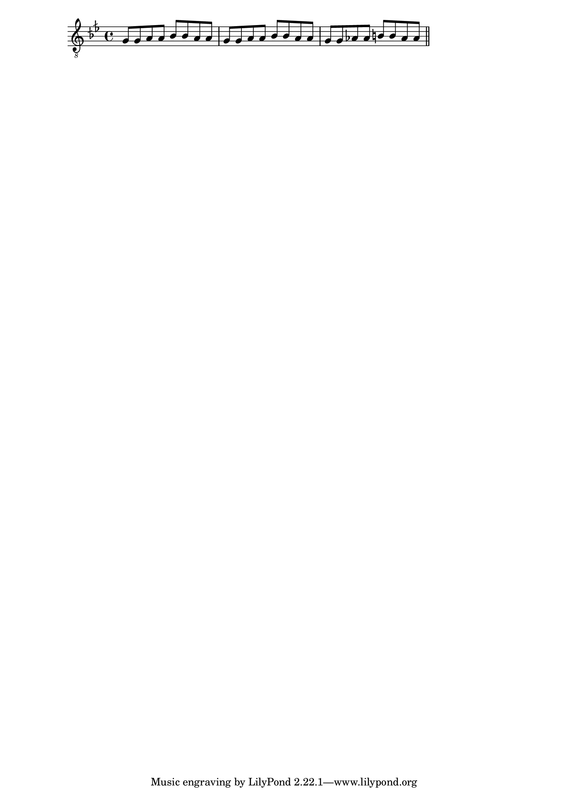
Cambio directo de yins. Aprovechando un cambio de sección dentro del desarrollo de la pieza, se arranca con otro yins distinto al actual. Este cambio de sección puede tener lugar tras una pausa en un taqsim (veremos que las pausas y silencios son una pieza fundamental en el recorrido de un taqsimb), o bien al comenzar una nueva jana tras el estribillo o taslim en una pieza que tenga tal estructura, como por ejemplo una longa o un samai.
Teniendo en cuenta cómo se produce el desarrollo melódico dentro de un maqam (melodías que se sitúan en un único yins durante periodos largos, y que solo se desplazan al siguiente después de haberse expresado abundantemente en ese reducido contexto melódico, como vimos en el apartado anterior), es interesante concebir las modulaciones no como un «recorrido» entre maqamaat, sino entre ashnasb. Las modulaciones pueden entenderse así como recorridos a través de un conjunto de ashnasb, produciéndose la mayoría de esos cambios en los correspondientes ghammaz y notas tónicas.
Puesto que el ghammaz de la mayor parte de los principales maqamaat, según hemos visto, se sitúa sobre la nota sol (en particular para los maqamaat con tónica en do y re), esta nota tiene una importancia fundamental como nota pivote a la hora de introducir modulaciones en una pieza.
Al llegar a la octava, puede utilizarse de nuevo el yins original (el primero del maqam), pero también uno distinto que forme parte del sayr del maqam. La ausencia de armonía permite que pueda prescindirse de la equivalencia en la octava. En el regreso hacia la nota origen para cerrar la pieza, se recuperará el primer yins del maqam de partida, en la octava original.
Si en la improvisación se tiene en consideración este enfoque basado en yins como unidades básicas, resulta también más natural entender el desarrollo melódico. Avanzar de un yins a otro es un cambio más relevante, visto de esta manera, que si consideramos todas las notas del maqam como parte de una escala, y requiere por ello un esquema de desarrollo melódico distinto.
Puede decirse, en resumen, que el recorrido melódico de una pieza, con las modulaciones correspondientes, es un encadenamiento de distintos ashnas de acuerdo a unas rutas melódicas preestablecidas, las cuales conforman el denominado sayr del maqam,
Veremos más al respecto en la sección [taqsim2], cuando vemos cómo ese desarrollo melódico se materializa en el taqsimb.
El aprendizaje de los maqamaat
Considerando lo anterior, y conociendo la manera en la que se entiende la modulación en la música árabe, resulta fácil ver que no es una buena estrategia el memorizar los distintos maqamaat del mismo modo en el que uno estudiaría una colección de escalas. En su lugar, resulta mucho más adecuado aprender los distintos ashnas y ser capaz de situar estos a partir de cualquier punto del ud (aun si estos tampoco se transponen arbitrariamente, sino tan solo a ciertas notas concretas).
El aprendizaje de los ashnas debe incluir no solo su estructura interválica o las posiciones de estos sobre el diapasón a partir de ciertas notas, sino especialmente la sonoridad de cada uno de ellos. Se ha de poder reconocer un yins al escucharlo, de tal modo que con él se pueda «reconstruir» el maqam que define y así percibirse la modulación completa.
Sayr de algunos maqamaat
Se presentan a continuación algunos sayr típicos para los maqamaat más habituales. Se describen como una cadena lineal de ashnasb, según lo explicado anteriormente, pero deben entenderse como simples ejemplos de entre muchas alternativas posibles. El desarrollo de la melodía no es necesariamente algo lineal, y el orden aquí presentado puede alterarse, de tal manera que un sayr puede entenderse más como una estructura ramificada que como un recorrido lineal. O como esos libros juveniles que permiten elegir la trama en ciertos puntos, de tal manera que el lector (o el intérprete o compositor en este caso) ha de tomar decisiones pero no con absoluta libertad, sino sobre un conjunto limitado de posibilidades definidas de antemano.
Los yins que se muestran son los más frecuentes, pero las modulaciones podrían llevar a otros distintos, teniéndose así un desarrollo más exótico. Los ejemplos que se recogen en esta sección cubren algunas de las posibilidades más comunes.
Cada elemento representa un yins, identificado por su nombre y la nota de partida (con el sufijo 8va cuando esta nota de arranque está en la octava superior y no en la octava original en la que comienza el maqam).
Maqam Nahawand
Nahawand do ⇒ Hiyaz sol ⇒ Kurd sol ⇒ Nahawand do ⇒ Nikriz do ⇒ Hiyaz sol
⇒ Nahawand do
Es decir, un recorrido en el que se emplean maqam Nahawand y maqam Nawa Athar.
Nahawand do ⇒ Hiyaz sol ⇒ Bayati sol ⇒ Nahawand do (8va) ⇒ Hiyaz sol
⇒ Nahawand do
Maqam Hiyaz
Hiyaz re ⇒ Nahawand sol ⇒ Rast sol ⇒ Hiyaz re (8va) ⇒ Nahawand sol ⇒ Hiyaz re
Hiyaz re ⇒ Bayati re ⇒ Nahawand sol ⇒ Hiyaz re (8va) ⇒ Nahawand sol
⇒ Hiyaz re
Maqam Rast
La modulación más habitual usa maqam Suznak. Un ejemplo de sayr sería el siguiente.
Rast do ⇒ Rast sol ⇒ Rast do (8va) ⇒ Nahawand sol ⇒ Rast do ⇒ Hiyaz sol
⇒ Rast do
Maqam Bayati
La modulación más habitual en maqam Bayati utiliza este junto con maqam Bayati Shuri.
Bayati re ⇒ Nahawand sol ⇒ Rast sol ⇒ Bayati re (8va) ⇒ Hiyaz sol ⇒ Bayati re
Otra modulación frecuente es la siguiente:
Bayati re ⇒ Nahawand sol ⇒ Bayati re ⇒ Saba re ⇒ Ayam Si♭ ⇒ Saba re
⇒ Bayati re
Es decir, combinando maqam Bayati y maqam Saba.
A partir de maqam Saba en re es común introducir una modulación a maqam Hiyaz en re.
Estas modulaciones, como se ha dicho, pueden combinarse, y en una pieza más larga pueden desarrollarse de manera consecutiva los dos sayr anteriores.